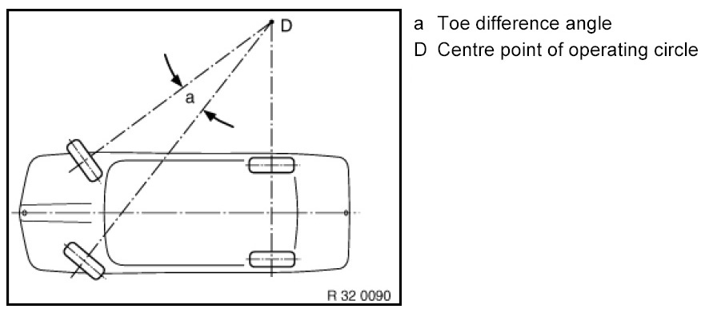
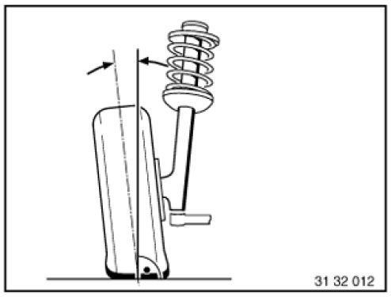
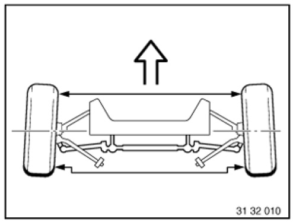
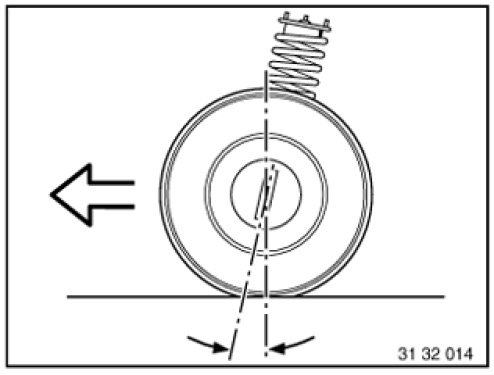
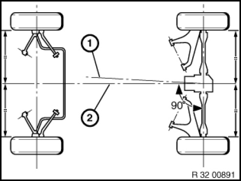
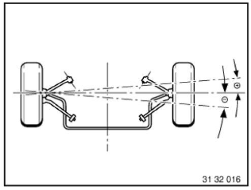
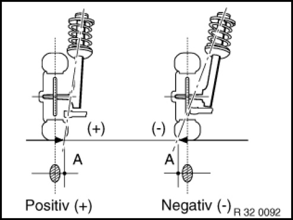

32 00 ... General Information and Definitions
32 00 ... General information and definitions

Toe angle difference
The toe angle difference is the angle adjustment of the inner cornering wheel relative to the outer cornering wheel when negotiating a curve. Steering is designed in such a way that angular position of wheels changes as steering lock progresses.
A correctly adjusted toe angle difference produces equal values for left and right lock with consideration of factory tolerances.
Toe angle difference provides information on corresponding operation of steering trapezoid for left or right steering lock from centre position.

Camber
Inclination of the wheel from the perpendicular.

Toe
Reduction in distance of front of front wheels to rear of front wheels. The toe-in prevents the wheels from moving apart during driving and thus:
- the wheels from vibrating and grinding
- excessive tire wear
- excessive strain on the steering linkage and its links/joints
- heavy vehicle steering
Measurement is performed in "straight ahead mode".

Castor
Is the inclination of the kingpin in the direction of travel viewed from the side. The line through the centre point of the spring strut support bearing and the control arm ball joint corresponds to the "kingpin".
Thanks to caster, wheels are pulled and not pushed. In a similar manner to king pin inclination, when driving in curves or around corners, returning forces are reproduced to help return wheels to straight-ahead position.

Geometrical driving axis 1
Is the angle bisector from the total rear-wheel toe.
Front-wheel measurements are taken in reference to this axis.
Symmetrical axis 2
Centre line running through front and rear axles.

Wheel misalignment
Angle by which one front wheel is displaced more towards front or rear than the other front wheel. The wheel offset angle is positive when the right wheel is displaced towards the front and negative when it is displaced towards the rear.

Kingpin offset/scrub radius
Is the distance from the centre of the wheel contact face to the intersection point of the kingpin extension. The line through the centre point of the spring strut support bearing and the control arm ball joint corresponds to the "kingpin".
The scrub radius is influenced by camber, kingpin angle and wheel offset of the wheel rim.